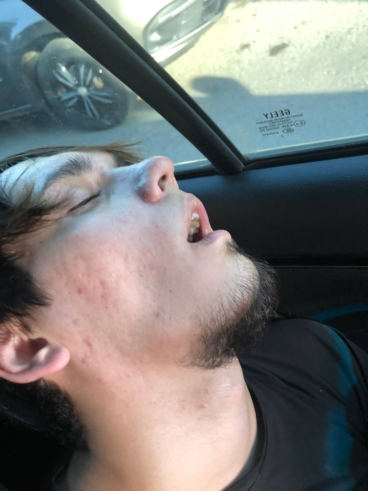
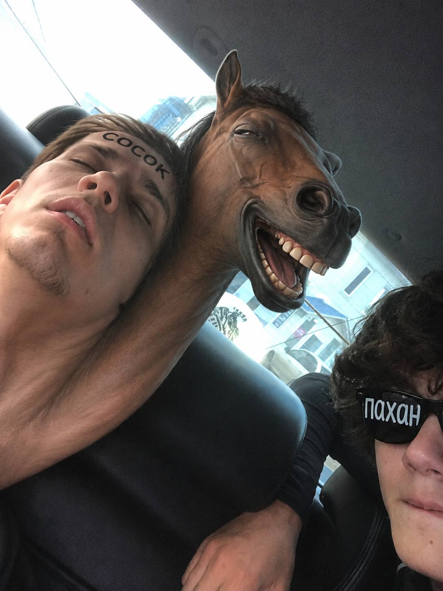
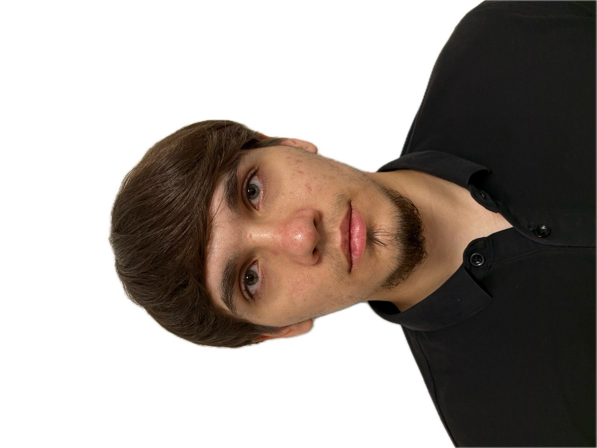
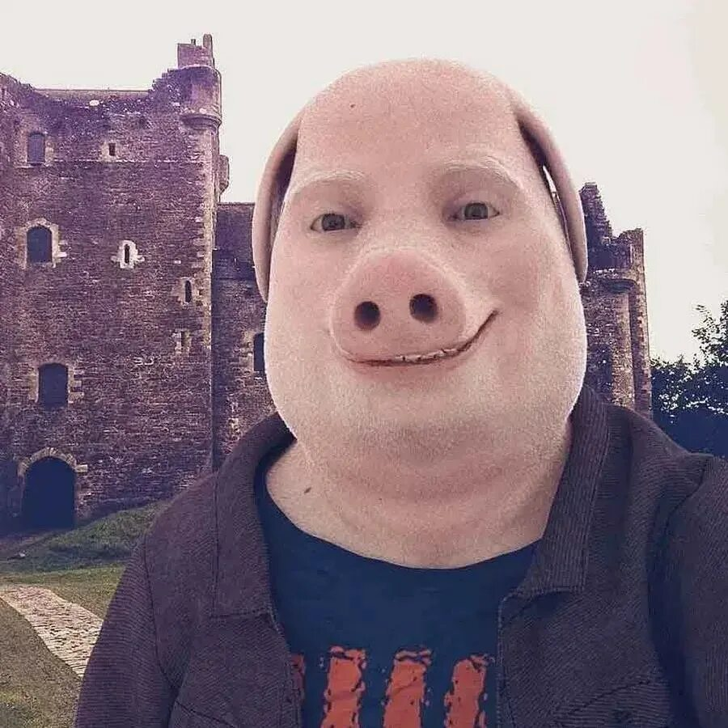

Биография
Сосок Сосковский родился в 2007 году в городе Альметьевск прямо в салоне автомобиля. Первое, что он увидел, была обшивка двери, а первое, что он сказал — «67».
С ранних лет проявлял чудеса нестандартного мышления. Учителя в школе ставили ему двойки, потому что он отказывался писать сочинения иначе, как маркером на собственном лбу.
В 2015 году совершил паломничество в Шотландию, где на фоне древнего замка впервые примерил маску свиньи. Это был его духовный перелом.
Сейчас Сосок ведёт затворнический образ жизни, спит в машине и путешествует по стране с резиновой головой лошади(КСТА НА ФОНЕ ЕГО ПАХАН САМЫЙ ПИЗДАТЫЙ НУ ТАМ ПО ОЧКАМ ПОНЯТНО). Его главная цель — доказать, что сон — это тоже искусство.


Фотогалерея

Перевёрнутый мир

Настоящее лицо
Факты о Сockе
- 01 Умеет спать стоя, лёжа и в позе эмбриона на водительском сиденье.
- 02 Число 67 — это не просто цифра, это его код доступа к реальности.
- 03 Резиновая голова лошади — не аксессуар, а его второе «я».
- 04 Однажды объяснил профессору Оксфорда, почему свиньи — это высшая форма эволюции.